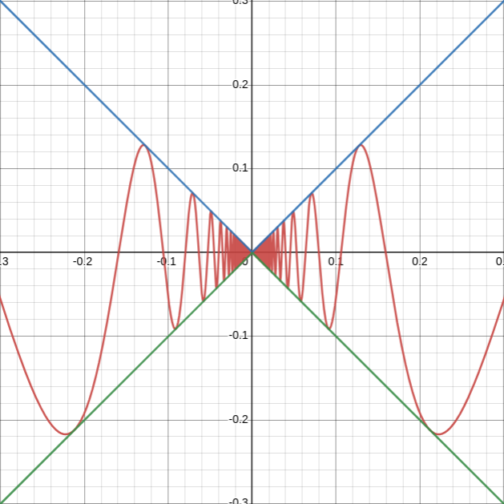
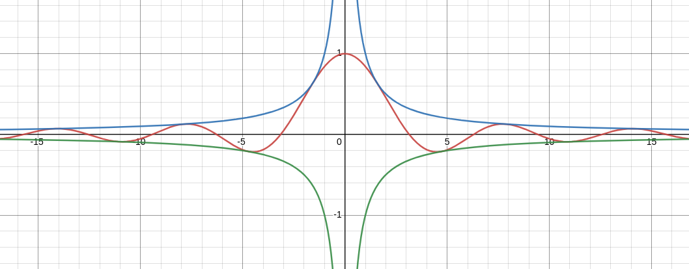
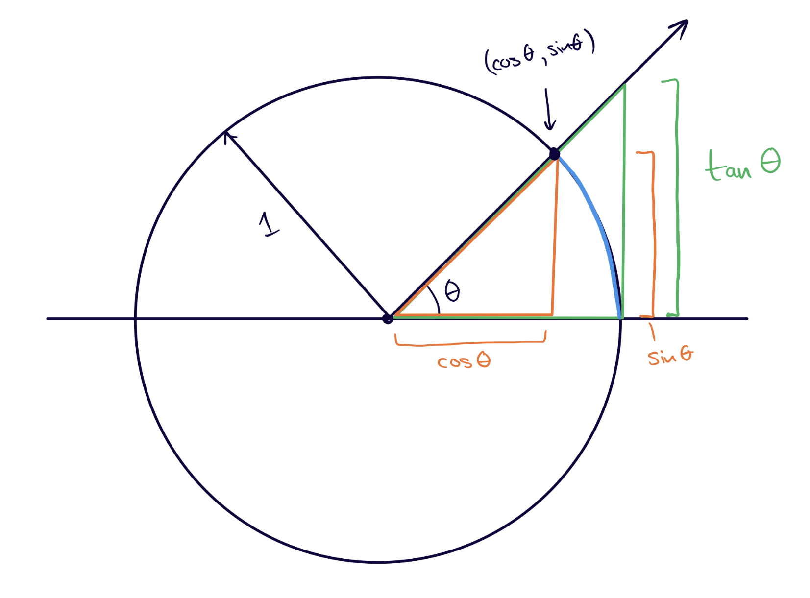
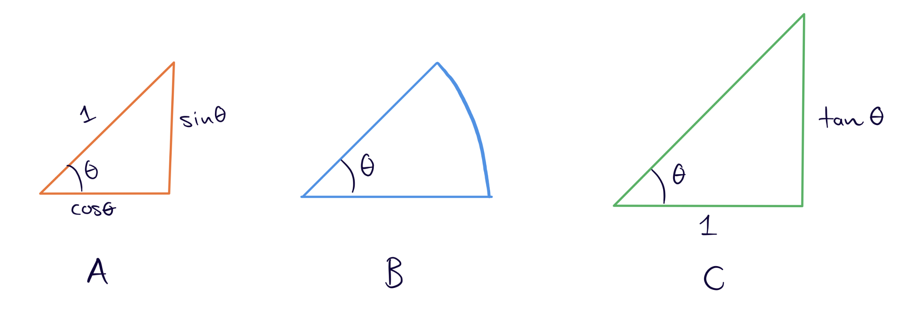
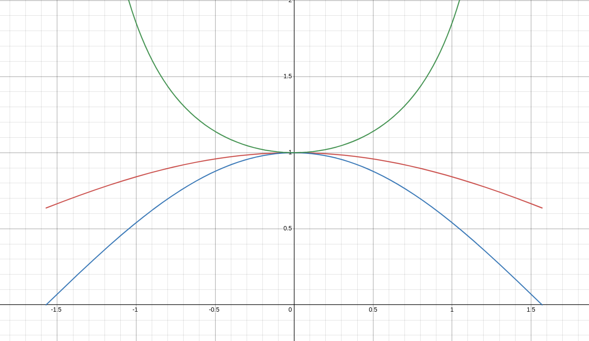
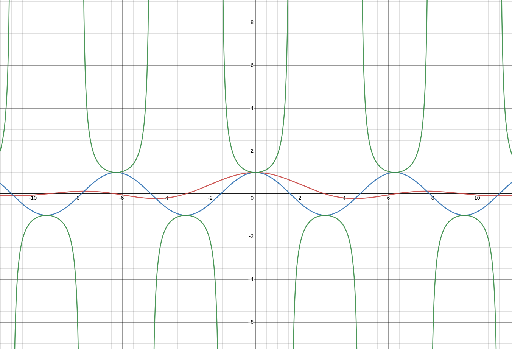

In one of the recitation classes a while back we needed to either use the following fact:
x→0limxsin(x)=1.
At the time, I forgot how to calculate this limit without using l'Hopital's rule, Taylor Series or the "Small Angle Approximation". This is a problem, because:
We hadn't seen l'Hopital's rule yet, and worse, it requires knowing that dxdsin(x)=cos(x). As far as I'm aware, calculating the derivative of sin(x) requires knowing the above limit, so this method is circular!
Taylor Series don't show up until Calculus II and they also require the derivative of sin(x).
The small angle approximation says that when x is small, sin(x)≈x. This is quite useful in physics, but is imprecise. To make it precise, you might say that as x gets super small, sin(x)=x+ϵ where ϵ is some error term, and that ϵ shrinks faster than x does as x→0 (meaning that the percentage error in the approximation sin(x)≈x goes to zero as x→0). However, this is a fancy way of saying xsin(x)→1 as x→0, so this is also circular!
The correct way to calculate this limit, or at least, a correct way to calculate it, is by using the Squeeze Theorem. It's a wonderful computation tool. It's doubly embarrassing that I forgot it that day, especially because we used it that same worksheet to find a very similar limit: limx→0xsin(1/x)! I wrote this post explaining the solution to this problem and delving into a lot of detail about the squeeze theorem, lest you forget it like I did.
Thanks to Catherine Chi for reminding me of this solution and for suggesting we use the areas of triangles to come up with good bounds for the function sin(x)/x.
Theorem: (The Squeeze Theorem) Let f, g and h be real valued functions on some interval containing the real number a. Suppose there exists some ϵ>0 such that for all a=x∈(a−ϵ,a+ϵ) we have g(x)≤f(x)≤h(x). If limx→ag(x)=limx→ah(x)=L, then limx→af(x)=L as well.
This may be hard to parse, so let's go over the statement of this theorem in more detail.
"Let f, g and h be real valued functions on some interval containing the real number a" means that f, g and h are all functions whose domain includes an interval (u,v)⊆R and whose codomain is the real numbers R. That is, the functions you're used to thinking about. It also names a special number a that is between u and v.
"Suppose there exists some ϵ such that for all a=x∈(a−ϵ,a+ϵ) we have..." is a fancy way of saying "for all points close to a but not equal to a...". The number ϵ>0 can be super small, as long as it's still positive, and thus (a−ϵ,a+ϵ) is a small interval centered at a. We call this "a small neighborhood around a" informally. This sort of language shows up in the formal definition of a limit, but that's a story for another time.
The statement g(x)≤f(x)≤h(x) simply means that we want g and h to be lower and upper bounds of f respectively. At this point we can see that the last portion of the statement actually gives us more freedom; we don't need g and h to bound feverywhere, just around a. Note that we don't need g and h to bound f at a itself; limits don't care about what happens at the limit point. As per usual we are only interested in what's happening arounda.
"If limx→ag(x)=limx→ah(x)=L..." means, "If the limits of g and h as x approaches a both exist and are equal..."
"...then limx→af(x)=L as well," means "then the limit of f as x approaches aexists and is equal to L".
That's still a big wall of text, and while it's convincing, perhaps you still don't feel the truth of the squeeze theorem. Here are two final things that hopefully help you feel it's truth.
This means that if g(x)≤f(x)≤h(x) as above, then limx→ag(x)≤limx→af(x)≤limx→ah(x). You have to be careful: if we have strict inequalities g(x)<f(x)<h(x), then we can only say that limx→ag(x)≤limx→af(x)≤limx→ah(x); limits turn strict inequalities into non-strict inequalities. If this fact is giving you pause, draw some pictures (perhaps some example graphs of g, f and h) and try to convince yourself that it is true!
If we accept this fact, then in the scenario that limx→ag(x)=limx→ah(x)=L we simply get that

The graph of y=xsin(1/x) in red, y=∣x∣ in blue and y=−∣x∣ in green.
While f(x)=xsin(1/x) looks bizarre, it's bounded above by ∣x∣ and below by −∣x∣, as you can see from the graph. At x=0, we get ∣x∣=−∣x∣=0, and so visually, it looks like f(x) is being squeezed into 0. Nonetheless, let's carefully write down a calculation of the limit as x→0 using the squeeze theorem.
Proof: Remember that −1≤sin(x)≤1 for all possible values of x. This means the inequality still holds if we replace x with 1/x: −1≤sin(1/x)≤1. We now want to multiply x into these inequalities, but if x is negative then all the inequalities will flip. Therefore, we break this into cases.
Case 1: (x≥0) As long as x>0, then we're free to multiply it into the inequality without changing anything: −1≤sin(x)≤1⟹−x≤xsin(x)≤x.
Since x is positive in this case, we can replace it with ∣x∣ wherever we want. Doing that gives us −∣x∣≤xsin(x)≤∣x∣. If that last step confused you, try to explain it to yourself: why does −x≤xsin(x)≤x imply that −∣x∣x≤sin(x)≤∣x∣ when x≥0? If you're wondering why we use ∣x∣ at all, read through the next case.
Case 2: (x<0) If x<0, then we need to flip the inequalities: −1≤sin(x)≤1⟹−x≥xsin(x)≥x. Since x is negative, we have that −∣x∣=x, hence −(−∣x∣)≥xsin(x)≥−∣x∣. or, after rearranging, −∣x∣≤xsin(x)≤∣x∣.
Now you see why we used the absolute value signs: it's a clever way to get upper and lower bounds on xsin(x) that work when x≥0and when x<0. Now, if we set
g(x)=−∣x∣andh(x)=∣x∣,
then clearly limx→ag(x)=limx→ah(x)=0. By what we just shown,
g(x)≤xsin(1/x)≤h(x)
for all x (no need to look at a small neighborhood, these are global bounds). By the squeeze theorem, we immediately get limx→axsin(x)=0. Done!
Notice what happened here: we spent all our work finding upper and lower bounds. Once we had them, the calculation of the limit was immediate.
Takeaway:The squeeze theorem lets you replace the problem of calculating a difficult limit with the problem of finding nice upper and lower bounds.
Our strategy is to find functions g and h which bound sin(x)/x near 0 and which have the same limit at 0. Finding functions which bound sin(x)/x is easy; the tricky part is ensuring they have the same limit.
We know that −1≤sin(x)≤1, so maybe we can copy our strategy from the xsin(1/x) example. If we do that, then we get
−∣x∣1≤xsin(x)≤∣x∣1.
Great! Only trouble is, as x→0, our lower bound goes to −∞ and our upper bound goes to ∞, so we now only know that if the limit exists,
−∞≤x→0limxsin(x)≤∞,
which just means that limx→0xsin(x) is "some number". Not exactly helpful.

Graph of y=sin(x)/x in red, y=1/∣x∣ in blue and y=−1/∣x∣ in green. Not a good helpful bound.
Note: You can use these bounds to prove that limx→−∞xsin(x)=limx→−∞xsin(x)=0. You have to modify the squeeze theorem a bit though to make sense of limits at infinity.
As suggested by Catherine, we're breaking out some triangles and circles. Consider the normal setup on the unit circle, only this time we're adding a second, bigger triangle (seen in green):

A triangle with hypotnuse 1, a wedge of the circle and a triangle with adjacent side 1; all with angle θ.
We're going to compare the areas of these three shapes.

Name the orange triangle A, name the wedge B and name the green triangle C.
Substituting the formulas we found in for the areas in inequality (15), we get
21cosθsinθ≤2θ≤21tanθ.
Multiply by 2 to get
cosθsinθ≤θ≤tanθ=cosθsinθ.
Now we make some restrictions. We're eventually going to be applying the squeeze theorem at θ=0, so we may as well restrict our possible values of θ. Let's say that −π/2<θ<π/2; if you look at the statement of the squeeze theorem, we have chosen ϵ=π/2. Now we're working in the interval (−2π,2π).
Note: We actually already implicitly made this restriction to θ. If θ was any larger, then the triangles wouldn't have angles that sum to π radians.
I'd like to divide by sinθ, but in order to control what happens to the inequalities, I need to break into the cases sinθ>0 and sinθ<0.
Case 1: (θ>0) This means sinθ>0 as well, so I can divide by it without affecting the inequalities. Dividing everything in equation (17) by θ gives me cosθsinθ≤θ≤tanθ=cosθsinθ⇝cosθ≤sinθθ≤cosθ1. Now I've got sinθθ, the opposite of what I want. Can I flip everything? Again, I need to verify that the signs behave well. Recall that, when a and b have matching signs, we get
a<b⟺a1>b1
(play with some positive numbers to convince yourself of this if it's unfamiliar). As long as 0<θ<π/2, as we have assumed is the case, then everything in these inequalities is positive. Taking the reciprocal of everything in (18) gives me cosθ1≥θsinθ≥cosθ,
and magically, we have arrived at upper and lower bounds for θsinθ on the interval θ∈(0,2π)!
Case 2: (θ<0) If the angle is negative, then the shapes we drew flip down into quadrant 4 of the plane. The formulas we used for area then include a negative side length, so our inequalities in Equation 6 flip! This gives us 21cosθsinθ≥2θ≥21tanθ. I can repeat the steps from before, except θ<0 implies sinθ<0 too, so when I divide by it I must flip all the inequalities again:
cosθ≤sinθθ≤cosθ1.
We're in the interval θ∈(−2π,0). Here, cosθ is positive, sinθ is negative and θ is negative. This means sinθ/θ is positive, all sides of the inequalities in (21) have matching sign. According to the rule from Case 1, I therefore flip the inequalities one more time when I take reciprocals, leaving me with cosθ1≥θsinθ≥cosθ. This is the same pair of lower and upper bounds as in the other case.
We're now ready to apply the squeeze theorem. Set g(θ)=cosθ and h(θ)=cosθ1. By what we have just shown with a lovely combination of geometry and algebra is that, whenever θ∈(−2π,2π), we have
We're done! Here's a last graph to illustrate that these bounds do indeed work, in case you don't trust the algebra.

The graph of y=xsinx in red, of y=cosx in blue and y=cosx1 in green restricted to the domain x∈(−2π,2π)

Full domain of all functions. Luckily we only care what's happening near x=0